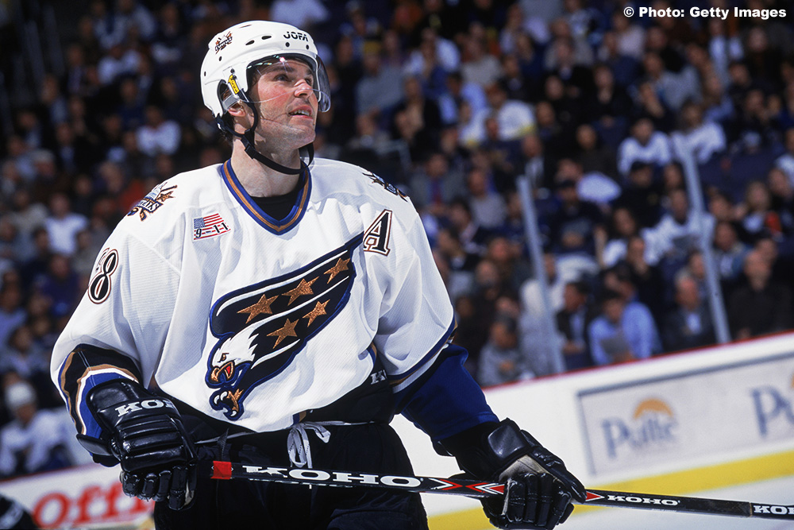
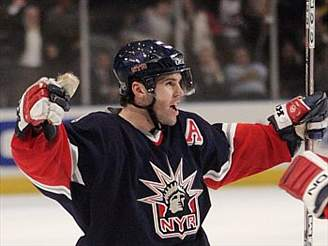
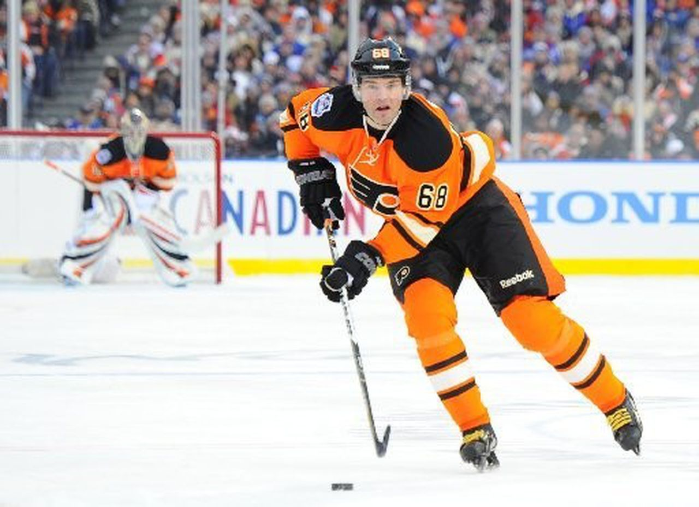
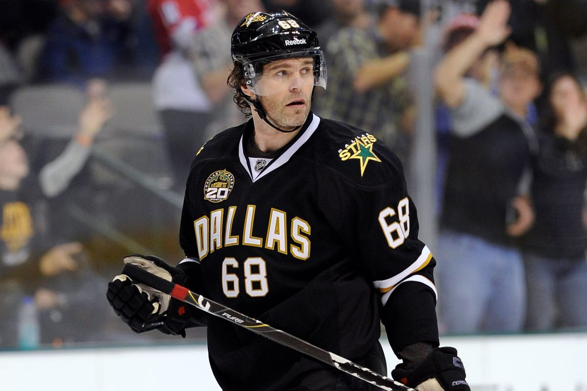
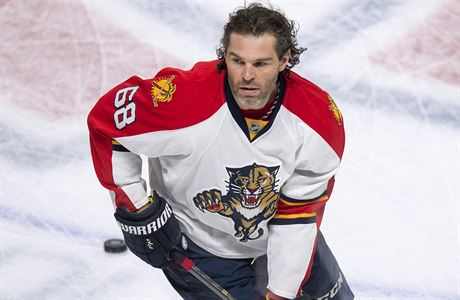
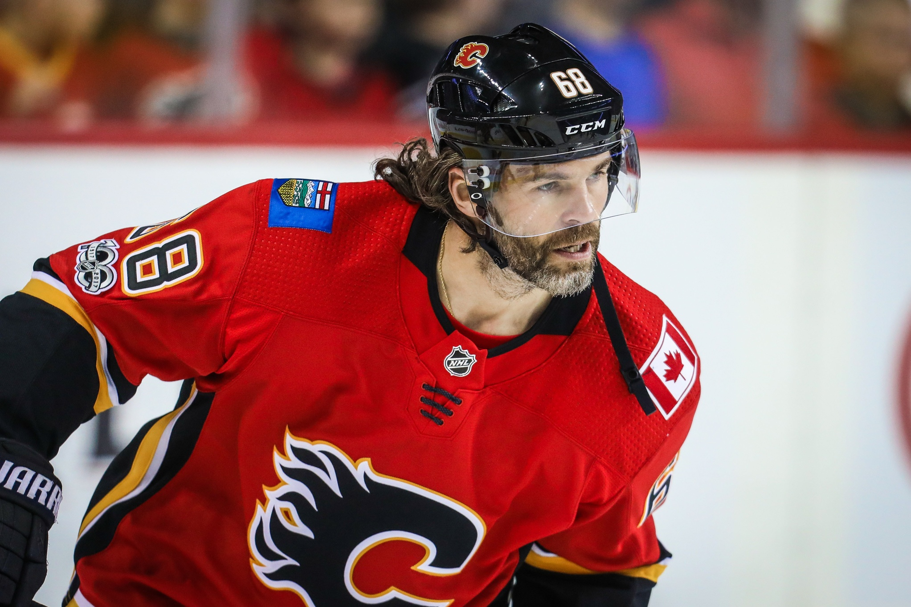

Jaromír Jágr (* 15. února 1972 Kladno) je český hokejový útočník hrající od roku 2018 za český extraligový klub Rytíři Kladno, jehož je zároveň majoritním vlastníkem. Dříve působil na nejvyšší světové úrovni v mnoha klubech NHL.
| Tým | Roky/Sezóna | Zápasy | Góly | Asistence | Body | Trestné minuty | |
|---|---|---|---|---|---|---|---|
|
Pittsburgh Penguins | 1994-2001 | 806 | 504 | 632 | 1136 | 714 |
|  | Washington Capitals | 2001-2004 | 196 | 85 | 123 | 208 | 96 |
|  | New York Rangers | 2003/04; 2005-2008 | 300 | 134 | 212 | 346 | 246 |
|  | Philadelphia Flyers | 2011/12 | 84 | 20 | 42 | 62 | 32 |
|  | Dallas Stars | 2012/13 | 34 | 14 | 12 | 26 | 20 |
|
Boston Bruins | 2012/13 | 11 | 2 | 17 | 19 | 10 |
|
New Jersey Devils | 2013-2015 | 139 | 35 | 61 | 96 | 88 |
|  | Florida Panthers | 2015-2017 | 187 | 49 | 83 | 132 | 114 |
|  | Calgary Flames | 2017/18 | 22 | 1 | 6 | 7 | 10 |
| Celkově | ------- | ------- | 2149 | 844 | 1278 | 2122 | 1330 |
*Pro více informací k týmu, kde hrál, stačí kliknout na obrázek
| Tým | Země | Roky/Sezóna | Zápasy | Góly | Asistence | Body | Trestné minuty | |
|---|---|---|---|---|---|---|---|---|
 |
HC Bolzano | Itálie | 1994/95 | 6 | 8 | 8 | 16 | 4 |
 |
Schalker Haie | Německo | 1994/95 | 1 | 1 | 10 | 11 | 0 |
 |
Avangard Omsk | Rusko | 2004/05; 2008-2011 | 224 | 93 | 124 | 217 | 257 |